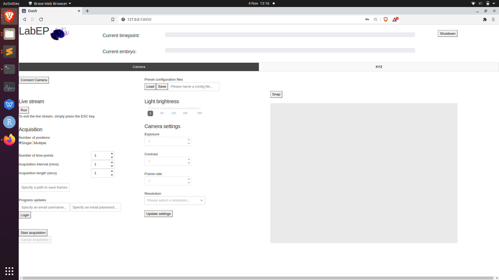
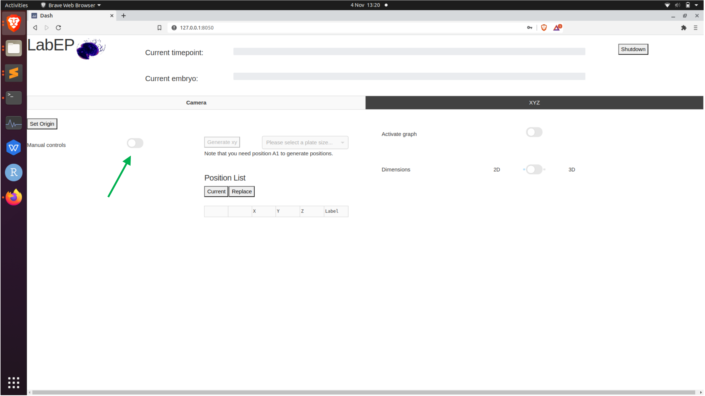
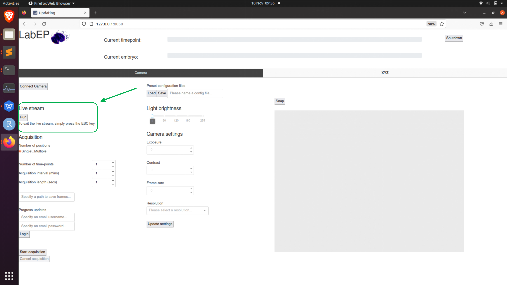
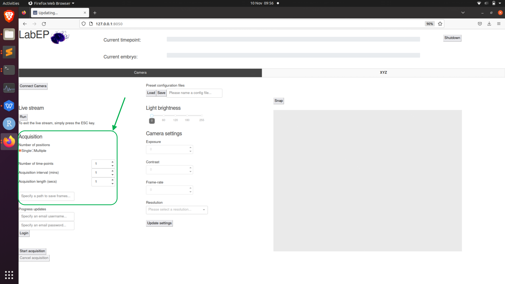

Setting up an experiment
Step-by-step overview
Connect camera
Home stage
Adjust parameters on camera and start live stream
Use manual controls to find and record desired positions
Exit live stream and save config for future reproducibility
Set acquisition parameters and progress updates, if desired
Start acquisition!
Guided walkthrough
Once you have started the LabEmbryoCam user interface, either by the terminal or an appimage, you will be given an address to open in your browser. Once opened you should see the user interface in browser like so:
We can now proceed with getting the hardware set up for running an experiment.
The first thing we will do is to home the xyz stage. This is essential to ensure that the correct origin is used when finding and creating positions. To do this, click the following button in the xyz tab of the UI:

Note
Before homing the stage, make sure there are no objects that could obstruct the movement of the stage. Also, make sure not to use the app whilst the stage is homing as this could interfere with the process.
Once the stage is homed, we can now make use of the manual controls to move the stage to desired positions. To enable the joystick and Z buttons, toggle the following switch in the xyz tab of the UI:
In order to record positions for an experiment, we need to first start a camera live stream to ensure our positions are correct. This can be done via clicking the following button in the camera tab:
The live stream will open in a separate window and should look like this:

Now that we have a live stream from the camera we can position the stage over a desired position by using the manual controls and the live stream as feedback.
Note
If you would like to change the camera settings you must exit the live stream before doing this so that your changes can take effect. Then when you have finished choosing your desired setttings, press the Update Settings button before starting the live stream again.
Once you have a position that you want, click the following button in the xyz tab to record the current position:

This will add a position entry into the position list:

Note that all columns of this table are editable.
You can repeat this step until you have recorded all the positions you want. Once you have completed recording positions, the next step is to enter the parameters for the acquisition before starting the experiment.
The parameters can be found in the Acquisition area in the camera tab. There area the following parameters:
Number of positions - Whether you would like to capture footage for only the current position (‘Single’) or all the positions you have recorded (‘Multiple’).
Number of timepoints - How many acquisition iterations you would like the system to complete. An iteration consists of capturing footage for the specified positions. Setting the acquisition interval allows us to set this process to complete every X minutes, where X would be the acquisition interval.
Acquisition interval - How long to wait between each timepoint in minutes.
Acquisition length - How long to capture video for each position, at each timepoint.
Save folder - The full file path to the directory where you would like to save video.
Progress updates - Username and password for gmail specific to your unit. Click the login button to send progress updates to this email account after every timepoint.
After entering the parameters for your experiment, the last step is to press the Start Acquisition button to begin the experiment. Note that you can cancel an acquisition in progress if you would like to make adjustments to the parameters used by the software.
Note
You cannot change parameters whilst the acquisition is running because the software is effectively paused whilst it is running this process.